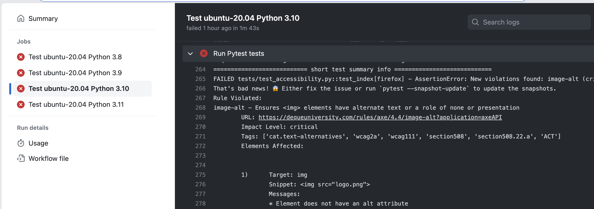

Automated Accessibility Audits
About me
Python Cloud Advocate at Microsoft
Formerly: UC Berkeley, Coursera, Khan Academy, Google
Find me online at:
| Mastodon | @pamelafox@fosstodon.org |
| @pamelafox | |
| GitHub | www.github.com/pamelafox |
| Website | pamelafox.org |
My accessibility journey
aka, why am I talking to you about this?
- Coursera: Addressed site-wide issues from first external audit
- Khan Academy: Helped team addressing forum UI issues from external audit
- Khan Academy: Addressed accessibility issues with AP CSP content
- Microsoft: Figuring out how to make sure our samples are accessible
🥅 Goal for today!
What is accessibility?
What is accessibility?
Making your website usable by as many people as possible, especially for those with permanent, temporary, or situational disabilities.
Permanent
Temporary

Situational
Disabilities are diverse
Consider the difficulties each of these people might experience on your site:
- Tricky drag and drop interactions
- Lack of color contrast
- Audio notifications without captions
- Text-to-speech failures

Accessibility is important
It's the right thing to do.
It's the law.
It's good for business.
But what we measure matters...
Measuring accessibility
Manually
You can find many issues using browser extensions and manual testing (like keyboard tests).
But, will you remember to use these tools every time you make a change?
Audits
External audits are performed by accessibility experts and can provide great insights.
But, they can be expensive and time-consuming, so are often only done once a year. It's easy to regress between audits.
Automated
Automated tools can help you catch issues before they get to production.
- axe-core (JavaScript): Engine that detects accessibility issues
- pa11y (JavaScript CLI): Wrapper for axe-core and other tools
- lighthouse (JavaScript CLI): Wrapper for axe-core and other tools
Axe-core
Using axe-core
Axe-core must be used on an actually rendered webpage in a browser; not just a static HTML file.
<!DOCTYPE html>
<html>
<head>
<title>Accessibility test</title>
</head>
<body>
<h1>Accessibility test</h1>
<img src="pamela_baby_donkey.png">
<script src="https://cdn.jsdelivr.net/npm/axe-core@4.7.2/axe.min.js"></script>
<script>
axe.run().then(results => {
console.log(results.violations);
})
</script>
</body>
</html>
Axe-core results
The results contains a list of violations, keyed by the rule ID.
[
{"id": "image-alt",
"impact": "critical",
"tags": ["cat.text-alternatives", "wcag2a", "wcag111", "section508",
"section508.22.a", "ACT", "TTv5", "TT7.a", "TT7.b"],
"description": "Ensures <img> elements have alternate text or a role of none or presentation",
"help": "Images must have alternate text",
"helpUrl": "https://dequeuniversity.com/rules/axe/4.7/image-alt?application=axeAPI",
"nodes": [{
"html": "<img src=\"pamela_baby_donkey.jpg\" width=\"300\">",
"target": ["img"],
"failureSummary": "Fix any of the following:\nElement does not have an alt attribute\n aria-label attribute does not exist or is empty\n aria-labelledby attribute does not exist, references elements that do not exist or references elements that are empty\n Element has no title attribute\n Element's default semantics were not overridden with role=\"none\" or role=\"presentation\""
}]
}
...
]
Using axe-core from Python
We need a way to programmatically render a webpage and run JS on it.
Webpage renderers:
- Selenium: Supports many browsers, but can be slow/flaky
- Playwright: Newer, faster, more reliable
Axe-core + Playwright
Playwright: Getting started
Playwright is available for Python (plus other languages).
Install the package:
python3 -m pip install playwright
Install the browsers:
python3 -m playwright install --with-deps
Playwright: Rendering a webpage
Use either the sync or async API:
from playwright.sync_api import sync_playwright
with sync_playwright() as p:
browser = p.chromium.launch()
page = browser.new_page()
page.goto("https://2023.northbaypython.org/")
print(page.title())
browser.close()
You can use methods to interact with the webpage, like to click on a button or fill in a form.
Playwright: Running JS on a page
Inject a local or remote JS file:
page.add_script_tag(url="https://cdn.jsdelivr.net/npm/axe-core@4.7.2/axe.min.js")
Use the evaluate method to run JS:
axe_results = page.evaluate("axe.run()")
When the result of an expression is a JS Promise, Playwright will wait for it to resolve and return the result.
All together: axe-playwright-python
I created axe-playwright-python,
a Python package that runs the axe-core JavaScript library on a Playwright Page.
python3 -m pip install -U axe-playwright-python
python3 -m playwright install --with-deps
from playwright.sync_api import sync_playwright
from axe_playwright_python.sync_playwright import Axe
with sync_playwright() as playwright:
browser = playwright.chromium.launch()
page = browser.new_page()
page.goto("https://pretalx.northbaypython.org/")
results = Axe().run(page)
print(results.response)
browser.close()
axe-core-python: Results report
The results object stores the full results as a dict but also includes methods for other results formats.
print(results.generate_report())
Found 3 accessibility violations:
color-contrast - Ensures the contrast between foreground and background colors meets WCAG 2 AA contrast ratio thresholds
URL: https://dequeuniversity.com/rules/axe/4.4/color-contrast?application=axeAPI
Impact Level: serious
Tags: ['cat.color', 'wcag2aa', 'wcag143']
Elements Affected:
1) Target: a[href$="nbpy-2023/"]
Snippet: <a href="/nbpy-2023/">North Bay Python 2023 (July 29th – 30th, 2023)</a>
Messages:
* Element has insufficient color contrast of 3.06 (foreground color: #3aa57c, background color: #ffffff, font size: 12.0pt (16px), font weight: normal). Expected contrast ratio of 4.5:1
...
axe-core-python: Results snapshot
The snapshot format only includes violation rule names and counts.
print(results.generate_snapshot())
color-contrast (serious) : 2
empty-heading (minor) : 1
link-name (serious) : 1
(We'll see soon why that's a helpful format!)
What other formats would be helpful? PRs welcome!
Testing with Pytest
Pytest + Playwright
Pytest is a popular Python testing framework, and Playwright offers a pytest plugin.
pip install pytest-playwright
from playwright.sync_api import Page, expect
def test_click_tickets(page: Page):
page.goto("https://2023.northbaypython.org/")
page.get_by_role("link", name="Tickets on sale now!").click()
expect(page.locator("main")).to_contain_text("tickets are available")
Pytest + Playwright + axe-core
We can use axe-playwright-python in our Pytest tests to assert that there are no violations, and to generate a report if there are.
from axe_playwright_python.sync_playwright import Axe
from playwright.sync_api import Page
def test_a11y(page: Page):
page.goto("https://2023.northbaypython.org/", _external=True)
results = Axe().run(page)
assert results.violations_count == 0, results.generate_report()
Pytest + Playwright + axe-core: Results
When we run the test, we get a report of the violations.
python3 -m pytest test_axe_count.py
def test_a11y(page: Page):
page.goto("https://2023.northbaypython.org/")
results = Axe().run(page)
> assert results.violations_count == 0, results.generate_report()
E AssertionError: Found 5 accessibility violations:
E image-alt - Ensures  elements have alternate text or a role of none or presentation
E URL: https://dequeuniversity.com/rules/axe/4.4/image-alt?application=axeAPI
...
elements have alternate text or a role of none or presentation
E URL: https://dequeuniversity.com/rules/axe/4.4/image-alt?application=axeAPI
...
But nobody's perfect: most webpages will have > 0 violations. What to do? 🤔
📸 Snapshot testing 🧪
What is snapshot testing?
Snapshot testing is a way to test that the output of a function matches a previously saved snapshot.
Example using pytest-snapshot:
def emojify(s):
return s.replace('love', '❤️').replace('python', '🐍')
def test_function_output_with_snapshot(snapshot):
snapshot.assert_match(emojify('I love python'), 'snapshot.txt')
The first time we run the test, it will save the output to a file.
The next time we run the test, it will compare the output to that file.
We check snapshots into source control to track them over time.
Snapshot testing + axe-core
We can save the axe-core snapshots and check them into source control.
That way, we can see if the violations change over time.
Less violations: 👍 Update the snapshot!
More violations: 😱 Revert that change!
🙏🏼 Kudos to Michael Wheeler from UMich and their talk on Automated Web Accessibility Testing for the idea of using snapshot testing with axe-core.
Playwright + axe-core + snapshot testing
To make it as easy as possible, I made a pytest plugin that combines Playwright, axe-core, and snapshot testing.
python3 -m pip install pytest-axe-playwright-snapshot
python3 -m playwright install --with-deps
A test from a Flask app:
from flask import url_for
from playwright.sync_api import Page
def test_index(page: Page, axe_pytest_snapshot):
page.goto(url_for("index", _external=True))
axe_pytest_snapshot(page)
Requires pytest-flask to run a local server for the tests.
Running the snapshot tests
First run: (saves the snapshot)
python3 -m pytest --snapshot-update
Saved to snapshots/test_violations/chromium/snapshot.txt:
color-contrast (serious) : 2
empty-heading (minor) : 1
link-name (serious) : 1
Subsequent runs: (compares new snapshot to old.)
python3 -m pytest
Only update the snapshots if you're okay with the change in violations.
Test results: New accessibility issue
If there are violations in the new snapshot that weren't in the old, the test will fail with a message like this:
E AssertionError: New violations found: html-has-lang (serious)
E That's bad news! 😱 Either fix the issue or run `pytest --snapshot-update` to update the snapshots.
E html-has-lang - Ensures every HTML document has a lang attribute
E URL: https://dequeuniversity.com/rules/axe/4.4/html-has-lang?application=axeAPI
E Impact Level: serious
E Tags: ['cat.language', 'wcag2a', 'wcag311', 'ACT']
E Elements Affected:
E 1) Target: html
E Snippet: <html>
E Messages:
E * The <html> element does not have a lang attribute
Test results: Fixed accessibility issue
If there are less violations in the new snapshot than the old one, the test will also fail, but with a happy message like this:
E AssertionError: Old violations no longer found: html-has-lang (serious).
E That's good news! 🎉 Run `pytest --snapshot-update` to update the snapshots.
CI/CD integration
Run the tests on every PR.
💁🏼♀️ Tips for accessibility tests 🧪
(And really, any E2E tests)
Keep database state constant
If you're using a database, use a fixture to create the data you need for the test.
@pytest.fixture()
def fake_quiz(app):
Quiz.seed_data_if_empty()
yield _db.session.query(Quiz).first()
_db.session.query(Quiz).delete()
🔗 From tests/conftest.py
Wait for the page to be ready
Tests run quicker than humans. If parts of your page load asynchronously, you'll need to explicitly wait for them to be ready before running the tests.
HTMX example: (scores load via XHR)
<div id="scores" hx-get="/quizzes/{{ quiz.id}}/scores" hx-trigger="load">
<span class="htmx-indicator">Loading...>/span<
</div>
Test:
def test_quiz(page: Page, fake_quiz, axe_pytest_snapshot):
page.goto(url_for("quizzes.quiz", quiz_id=fake_quiz.id, _external=True))
expect(page.locator("#scores")).not_to_contain_text("Loading...")
axe_pytest_snapshot(page)
Test more than the initial load
If the page has any JavaScript or interaction, run a test on the initial state and the post-interaction state.
Initial load:
def test_quiz(page: Page, fake_quiz, axe_pytest_snapshot):
page.goto(url_for("quizzes.quiz", quiz_id=fake_quiz.id, _external=True))
axe_pytest_snapshot(page)
Post-interaction:
def test_quiz_submit(page: Page, fake_quiz, axe_pytest_snapshot):
page.goto(url_for("quizzes.quiz", quiz_id=fake_quiz.id, _external=True))
page.get_by_label("Your name:").click()
page.get_by_label("Your name:").fill("Pamela")
page.get_by_label("Ada Lovelace").check()
page.get_by_label("pip").check()
page.get_by_role("button", name="Submit your score!").click()
expect(page.locator("#score")).to_contain_text("You scored 25% on the quiz.")
axe_pytest_snapshot(page)
Fixing accessibility issues
You can read the reports from pytest to get a gist for the accessibility violations, but it's often easier to use a browser extension that uses Axe-core rules.
- Axe DevTools for Edge
- Axe DevTools for Chrome
Also consider an IDE extension like VS Code Axe Linter
Don't rely on automation to find all issues
With axe-core, you can find on average 57% of WCAG issues automatically.
What else can you do?
- Manual tests (tab/keyboard)
- External audits
- Engage with users who have disabilities
Thank you!
Grab the slides @ pamelafox.github.io/my-py-talks/automate-a11y
- github.com/pamelafox/axe-playwright-python
- github.com/pamelafox/pytest-axe-playwright-snapshot
- github.com/pamelafox/pamelafox-site: Repo with tests for 0 violations
- github.com/pamelafox/flask-db-quiz-example: Repo with snapshot tests
Find me online at:
| Mastodon | @pamelafox@fosstodon.org |
| @pamelafox | |
| GitHub | www.github.com/pamelafox |
| Website | pamelafox.org |